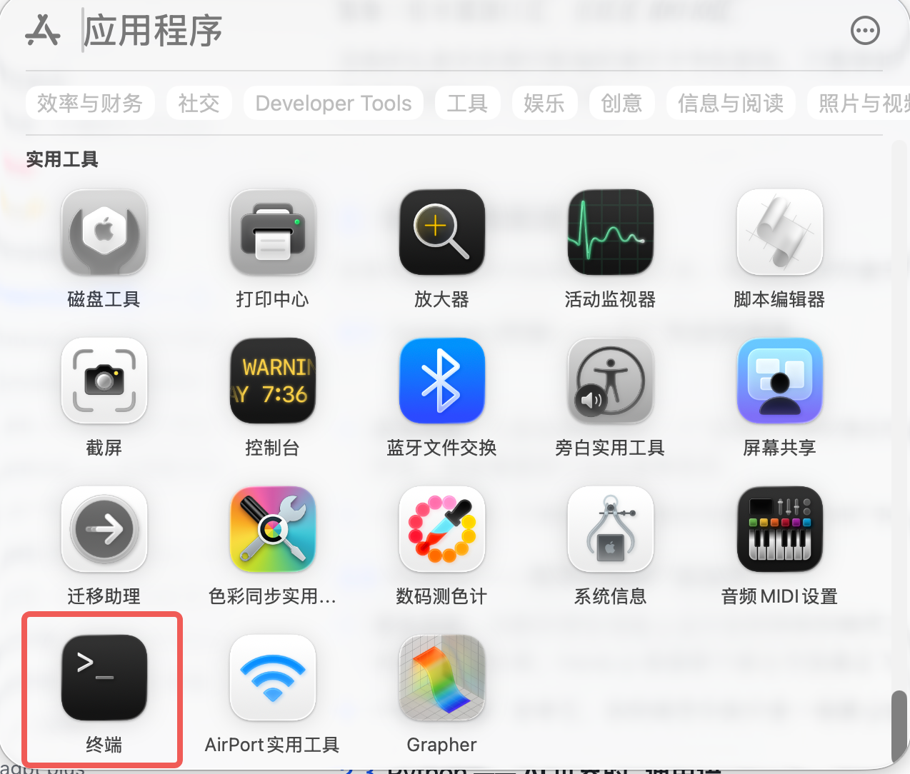
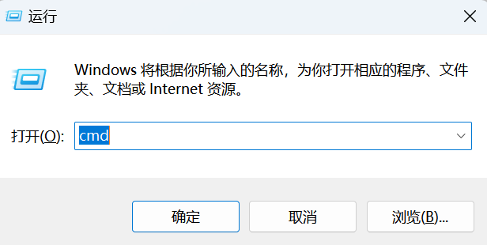
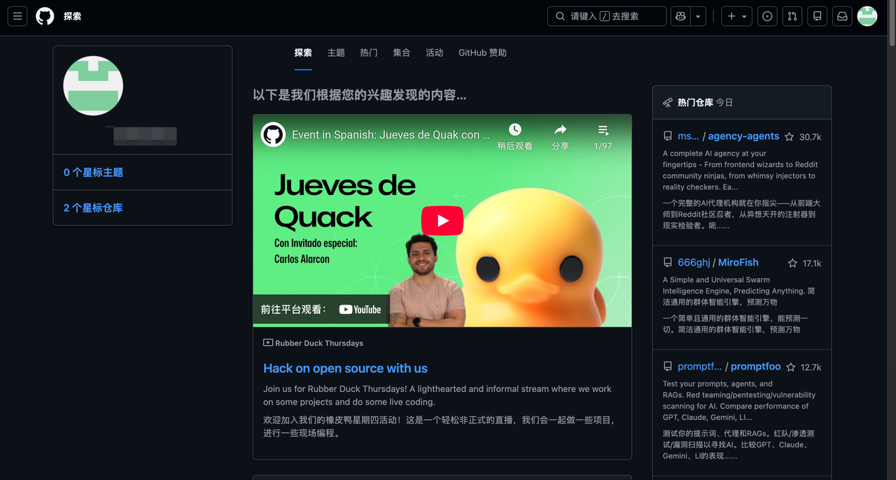
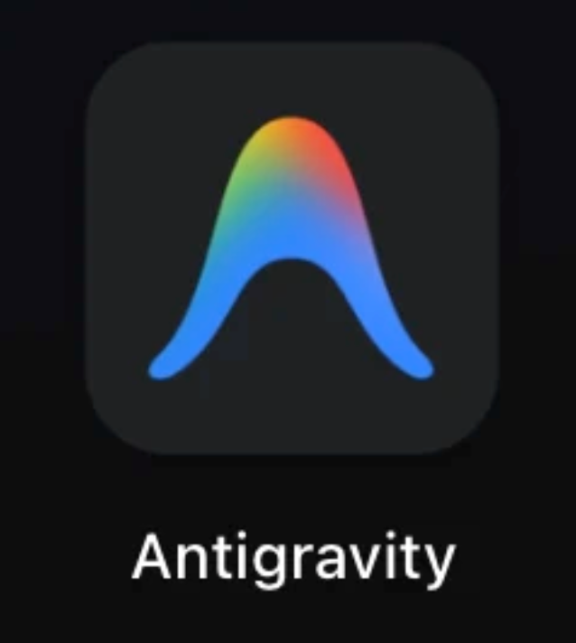
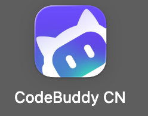
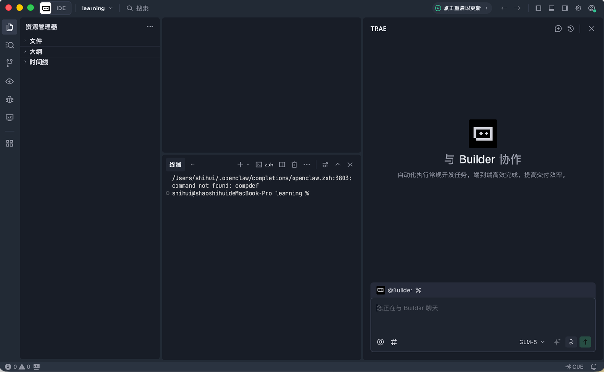
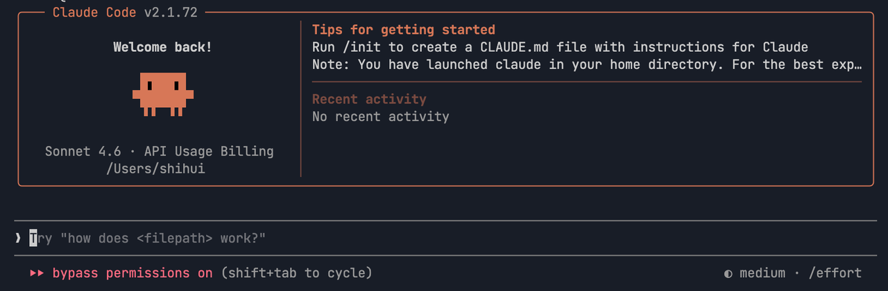
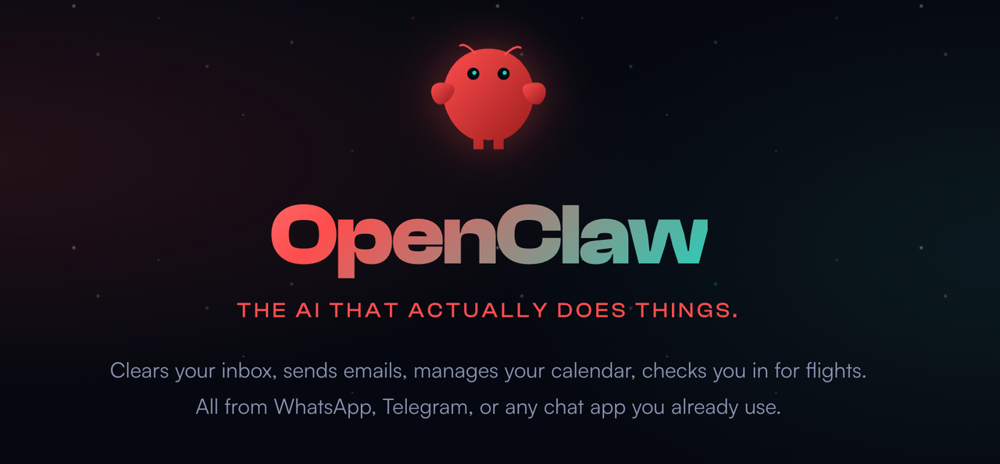

ChatGPT
GPT-5.6：像兢兢业业的全栈白领，能力全面，能处理很多工作任务。
打开官网 ↗这一关不要求实操。先认清大模型、API Key、开发五件套、编程工作台、数字特工和代码仓库，之后听到这些词不再发懵。
大模型（LLM）像一个住在云端的“外挂大脑”。它能写代码、画画、写方案，但通常住在 OpenAI、Google 等公司的服务器里。你可以去官网直接使用，也可以把它接入其他工具。
当你不在模型官网，而是在 AI 编程工具或智能体里调用这个“大脑”，通常需要购买模型用量，并获得一串专属通行码——API Key。它像“银行卡号 + 密码”，填进工具后，工具才能连接对应模型并产生费用。
AI 编程工具、智能体或自己的应用发起请求。
证明“谁在调用”，并把用量记到你的账户。
收到请求、生成结果，再把答案返回工具。
可以多选：下面哪些做法是安全的？
把它们分成三大模块，就得到开启开发之路的“新手五件套”。
终端是电脑自带的黑色或白色命令框。平时用鼠标点图标，是让系统替你找东西；在终端里，你可以直接用文字向电脑下达底层命令，像拿着“对讲机”指挥电脑。


终端负责发号施令，但电脑还需要“运行环境”才能听懂不同代码。它们像汽车发动机，没有它们，代码只是写满字母的文件。
大量 AI 与大模型项目使用 Python。安装后，电脑就能读懂并运行 Python 代码；它简单好学，是 AI 开发常见基建。
它是前端和网页技术常用的运行环境，能让各种网页工具、开源 AI 界面和自动化插件在本地真正跑起来。
记录每次修改，代码写乱时可以回退；也像快递员，把本地代码传送到云端。
它是网站，不是电脑软件。可以备份、分享和开源代码，也能下载别人的项目、点赞 Star，并把作品变成“赛博简历”。

每一行选择它所属的模块，再统一检查。
Cursor、Codex、Trae、Antigravity（反重力）、CodeBuddy 都是热门的 AI 编程辅助工具（IDE）。IDE 的英文是 Integrated Development Environment，中文叫“集成开发环境”。
 Cursor
Cursor Codex
Codex Trae
Trae
Antigravity
CodeBuddyClaude Code：更准确叫“AI 编程智能体”或“智能体式编程工具”。它可以运行在终端、IDE、桌面端和浏览器中，但它本身不等于 IDE。
OpenClaw：更准确叫“个人 AI 智能体系统”或“通用 AI Agent”。它能操作邮箱、日历、文件及其他工具，定位不是代码编辑器。
简单来说：Claude Code 不是 IDE，但可以在 IDE 里工作；OpenClaw 则和 IDE 没什么关系。

角色：沉浸式辅助工具。像你坐在工作台前，AI 坐在旁边。你提出需求，它展示代码改动，等待你点击接受。
你决定往哪里开，AI 和你商量着完成；你仍是主导者。

角色：AI 编程智能体。它可以在终端、IDE、桌面端和浏览器中工作。你可以交代一项复杂任务，它自己翻文件、修改、运行测试，完成后再汇报。
像一个随叫随到的员工，但它只能在获得权限的“办公室”范围内工作。

角色：个人 AI 智能体系统。它不是代码编辑器，可以接入飞书或 Discord，并根据授权操作邮箱、日历、文件及其他工具。
像 24 小时在线的远程管家：你可以在手机上发消息，让它处理电脑上的工作和杂活。
| 工具 | 交互方式 | 谁是老大？ | 核心强项 |
|---|---|---|---|
| Trae 等 IDE | 鼠标点击 + 工具内聊天 | 你（AI 是副驾驶） | 写新功能、边写边聊、视觉直观 |
| Claude Code | 终端 / IDE / 桌面端 / 浏览器 | 任务（AI 独立执行） | 大规模改代码、查 bug、自动化 |
| OpenClaw | 飞书 / Discord 等聊天软件 | 场景（AI 是代理人） | 邮箱、日历、文件与跨平台工具操作 |
两个情境各选一个最合适的工具，检查自己是否分清 IDE 与 AI 编程智能体。
代码不能只存在自己的电脑里，还需要存放、管理、分享和上线。代码仓库可以防止代码丢失、记录修改历史、方便协作，也是后续部署的重要入口。
世界各地的开发者在这里分享代码。你可以寻找现成“积木”搭建项目，也能保存和展示自己的作品。
界面全中文、国内访问更快，很多国内开源项目也会放在这里。
读完五组概念即可通关。互动用于检查理解，不会阻止你继续。